Albero genealogico facile
L'albero della tua famiglia, facile da fare e da regalare
Crea il vostro albero genealogico sul telefono, condividilo in PDF con tutta la famiglia e stampalo in grande da appendere in casa o da regalare.
Gratis per iniziare · Senza account né pubblicità · Senza abbonamento
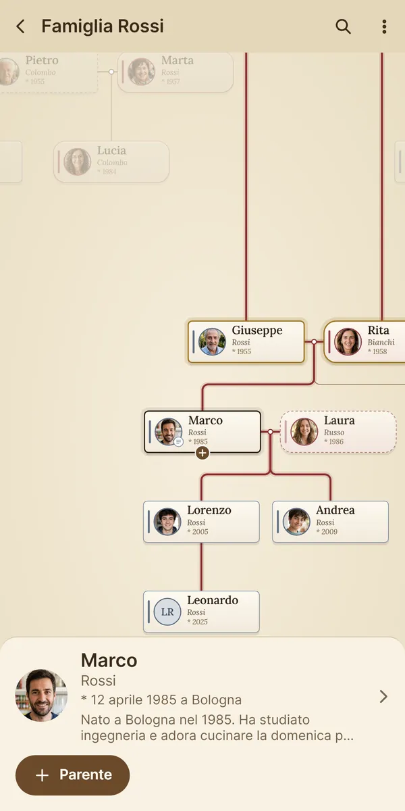

Facile fin dal primo minuto
Inizia da te. Tocca una scheda e aggiungi i suoi genitori, il partner, i figli o i fratelli: Ramo dispone l'albero da solo, anche quando la famiglia diventa grande. Non serve sapere di genealogia né leggere manuali.
- Foto dalla galleria o dalla fotocamera, con date approssimative se non le conosci con precisione.
- La storia di ogni persona: dove è nata, che lavoro faceva, i suoi aneddoti.
- Cerca chiunque per nome e tocca una persona per vedere illuminati i suoi antenati e discendenti.
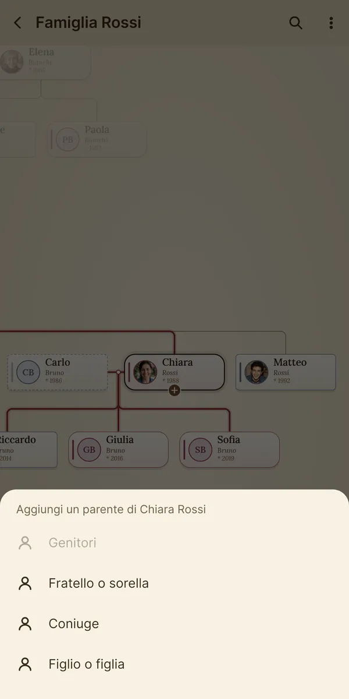
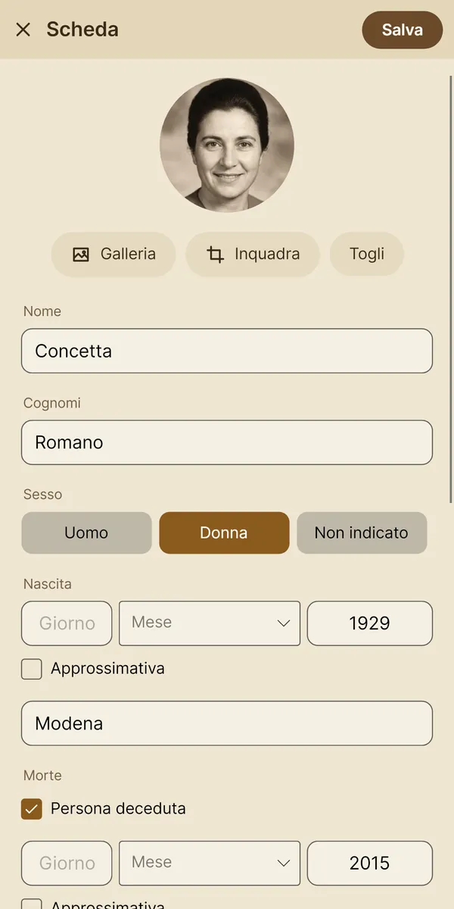
Condividilo con tutta la famiglia
Manda l'albero in PDF per messaggio o e-mail: arriva intero e nitido, e si può ingrandire per leggere ogni nome. Oppure come immagine, o su carta.
Oppure manda l'albero stesso: la tua famiglia lo apre con Ramo, che è gratis, e può vederlo e completarlo. Se ognuno aggiunge il suo ramo e ve lo rimandate, gli alberi si uniscono da soli, senza duplicare nessuno.
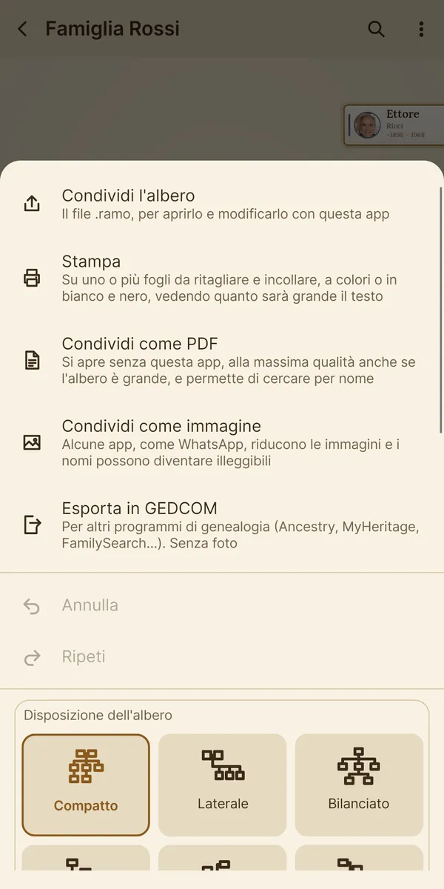
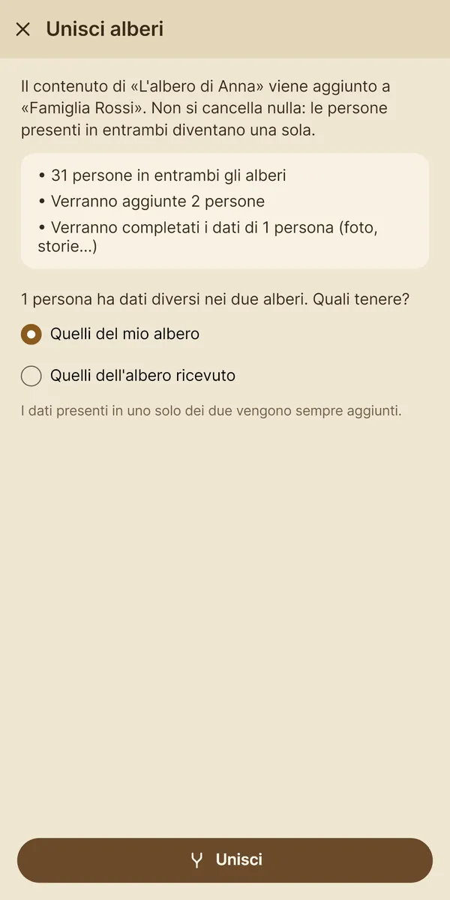
Stampalo o regalalo
Ramo distribuisce l'albero su uno o più fogli (A4, A3, Lettera…) da ritagliare e unire, a colori o in bianco e nero, e ti mostra prima come verrà e quanto saranno grandi i nomi.
Oppure trasformalo in una stampa da regalare, con titolo, dedica e cornice, nei formati di cornice più comuni: 30×40, 40×50 e 50×70 cm. Un regalo per i nonni, per Natale o per una riunione di famiglia.
Come stampare l'albero in 50×70 cm · Idee per regalarlo a Natale

Un albero chiaro e bello, a modo tuo
- Dieci stili, come Acquerello, Notte dorata, Carta e inchiostro o Pergamena, ognuno con i suoi colori e il suo carattere.
- Schede come preferisci: larghe o alte, con riquadro o a medaglione, con foto o solo con il nome.
- Sei modi di disporre l'albero, anche da sinistra a destra per le famiglie molto larghe.
- La parentela di ognuno con la persona principale: cugino di secondo grado, prozio, pronipote, suocera…
- Data e luogo delle nozze di ogni coppia, e un avviso al mattino con i compleanni della famiglia.
- Importa ed esporta GEDCOM, il formato degli altri programmi di genealogia.
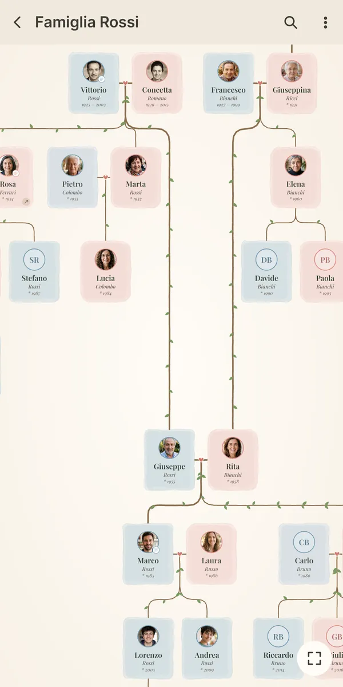
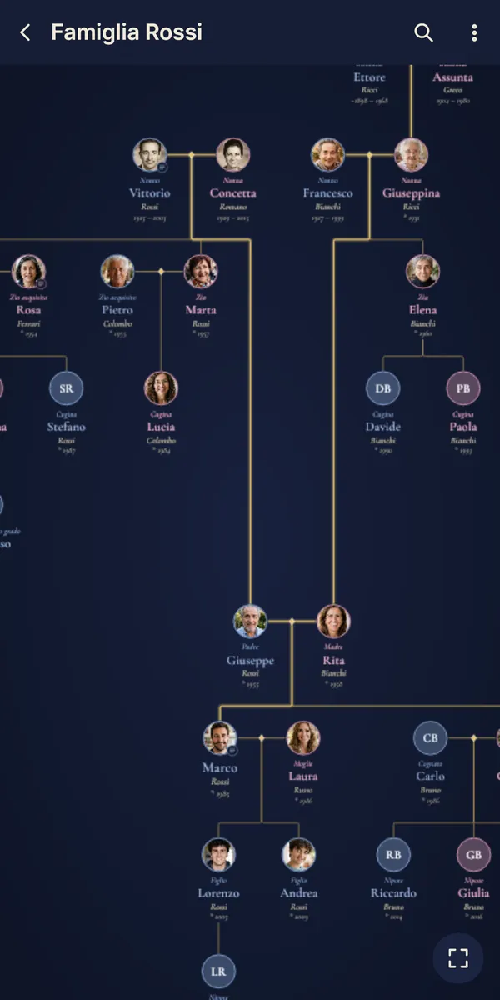
Senza account: tutto sul tuo telefono
Nessuna registrazione e nessuna pubblicità. I tuoi alberi restano solo sul tuo telefono e funzionano senza connessione: non vengono inviati a nessun server e nessun altro vede i tuoi dati. Con il backup salvi tutto in un unico file.
Anche sul computer
Ramo è disponibile per Android su Google Play e per Windows sul Microsoft Store. Gli alberi sono file .ramo che si aprono allo stesso modo su entrambi: spostali e riprendi da dove avevi lasciato, sullo schermo grande.
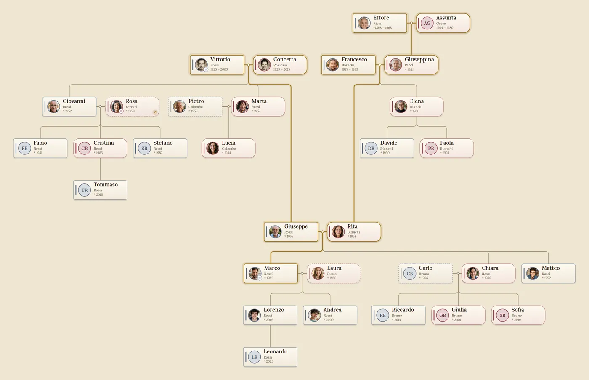
Gratis per iniziare, un solo pagamento per avere tutto
Gratis
- Crea il tuo albero, fino a 50 persone.
- Apri e modifica tutti gli alberi che ti mandano.
- Condividilo in PDF o come immagine e stampalo su fogli, con un piccolo marchio «Fatto con Ramo».
- Senza pubblicità.
Ramo completo
- Un solo pagamento, senza abbonamento.
- Alberi e persone senza limiti.
- Stampe da regalare.
- Alberi collegati (i parenti acquisiti nel loro albero).
- PDF, immagini e stampe senza il marchio.
Ramo completo si acquista dentro l'app, su Google Play o sul Microsoft Store.
Guide
Come stampare il tuo albero genealogico in grande, in 50×70 cmQuale formato scegliere, come rendere leggibili i nomi e cosa chiedere in copisteria.
Un albero genealogico come regalo di NataleIdee per i nonni e per tutta la famiglia, e un calendario per averlo pronto in tempo.
 Calcolo del grado di parentela: cugini di secondo grado, prozii e pronipotiScopri che parente è per te ognuno e di che grado, con una tabella.
Calcolo del grado di parentela: cugini di secondo grado, prozii e pronipotiScopri che parente è per te ognuno e di che grado, con una tabella.
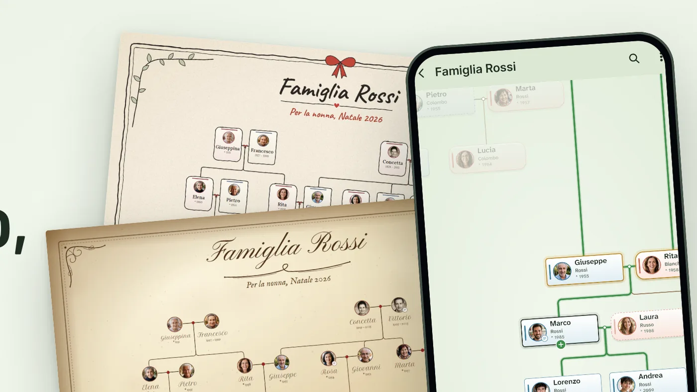
Come fare un albero genealogico, passo dopo passoCosa chiedere, dove cercare e come ordinarlo, con un modello gratis da stampare.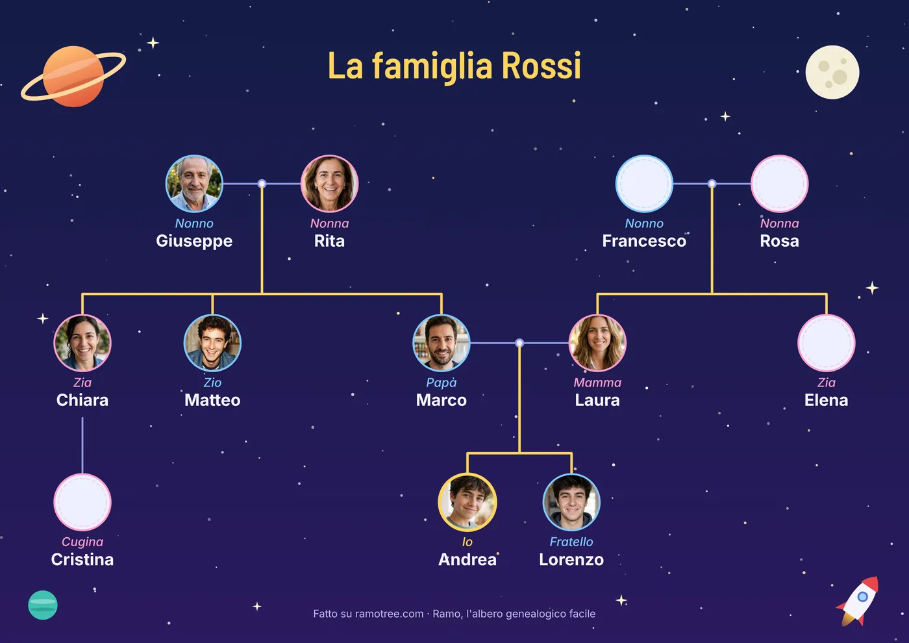
Albero genealogico per bambini: come farlo per la scuolaUn modello da stampare, idee con foto e disegni, e il vocabolario della famiglia in inglese.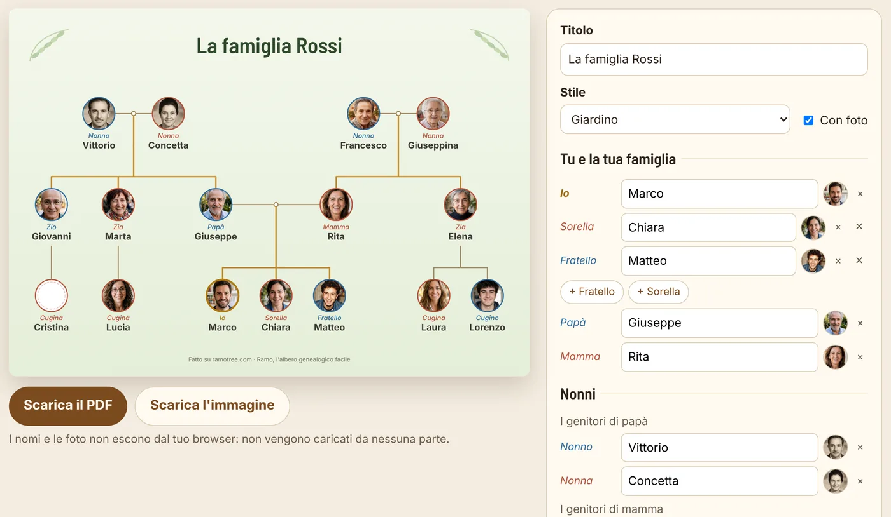
Crea il tuo albero genealogico e scaricaloMetti nonni, genitori, zii, cugini e fratelli, e scaricalo in PDF o come immagine.